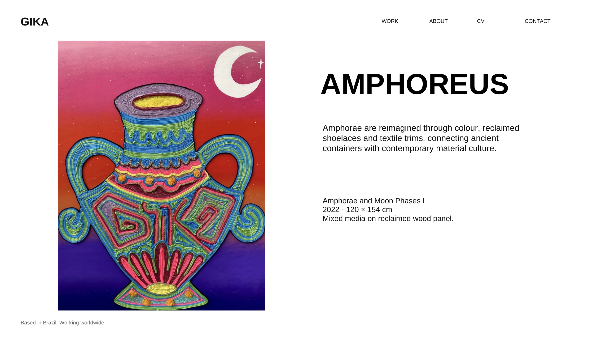
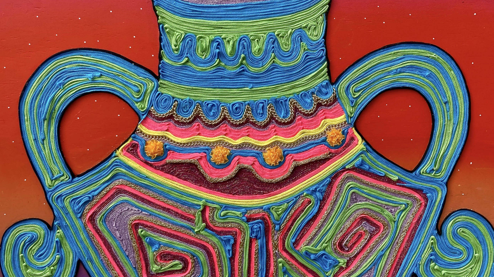
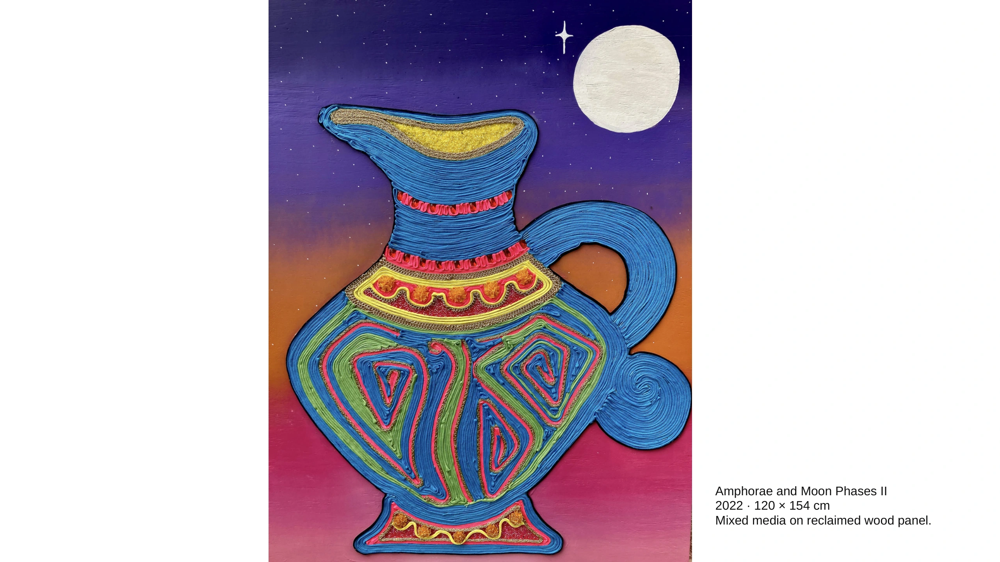
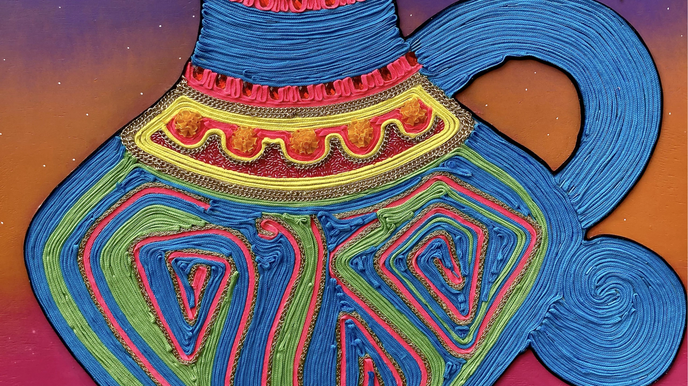

AMPHOREUS
Las ánforas se reinterpretan mediante el color, cordones reutilizados y acabados textiles, conectando recipientes antiguos con la cultura material contemporánea.
Técnica mixta sobre panel de madera reutilizada.



